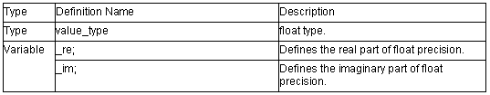

float_complex Class

1. float_complex::float_complex( float re=0.0f, float im=0.0f)
Constructor of class float_complex.
The initial settings are as follows:
_re = re;
_im = im;
2. float_complex::float_complex( const double_complex& rhs)
Constructor of class float_complex.
The initial settings are as follows:
_re = (float)rhs.real();
_im = (float)rhs.imag();
3. float float_complex::real() const
Calculates the real part.
Return value: this->_re
4. float float_complex::imag() const
Calculates the imagininary part.
Return value: this->_im
5. float_complex& float_complex::operator=(float rhs)
Copies rhs in the real part (_re).
0.0f is specified for the imaginary part (_im).
Return value: *this
6. float_complex& float_complex::operator+=(float rhs)
Adds rhs to the real part (_re) and stores the sum in the real part (_re).
The value of the imaginary part (_im) does not change.
Return value: *this
7. float_complex& float_complex::operator-=(float rhs)
Subtracts rhs from the real part and stores the difference in the real part (_re).
The value of the imaginary part (_im) does not change.
Return value: *this
8. float_complex& float_complex::operator*=(float rhs)
Multiplies by rhs and stores the product in *this.
(_re=_re*rhs.real(), _im=_im*rhs.real())
Return value: *this
9. float_complex& float_complex::operator/=(float rhs)
Divides by rhs and stores the quotient in *this.
(_re=_re/rhs.real(), _im=_im/rhs.real()))
Return value: *this
10. float_complex& float_complex::operator=( const float_complex& rhs)
Copies rhs
Return value: *this
11. float_complex& float_complex::operator+=( const float_complex& rhs)
Adds rhs and stores the sum in *this
Return value: *this
12. float_complex& float_complex::operator-=( const float_complex& rhs)
Subtracts rhs and stores the difference in *this.
Return value: *this
13. float_complex& float_complex::operator*=( const float_complex& rhs)
Multiplies by rhs and stores the product in *this.
Return value: *this
14. float_complex& float_complex::operator/=( const float_complex& rhs)
Divides by rhs and stores the quotient in *this.
Return value: *this